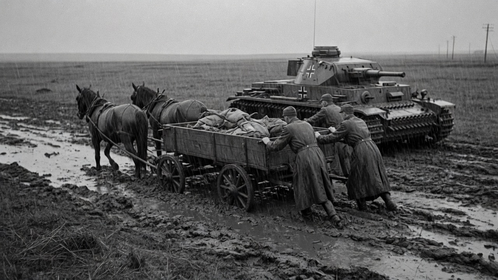
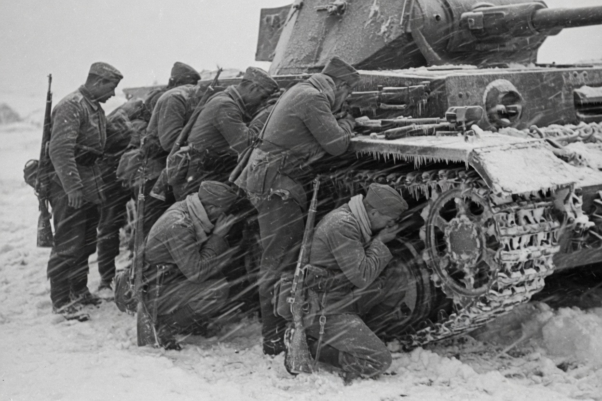
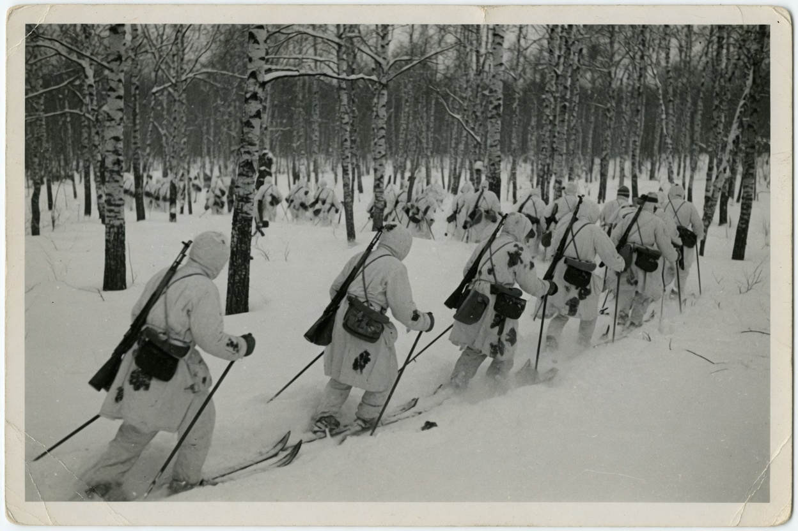
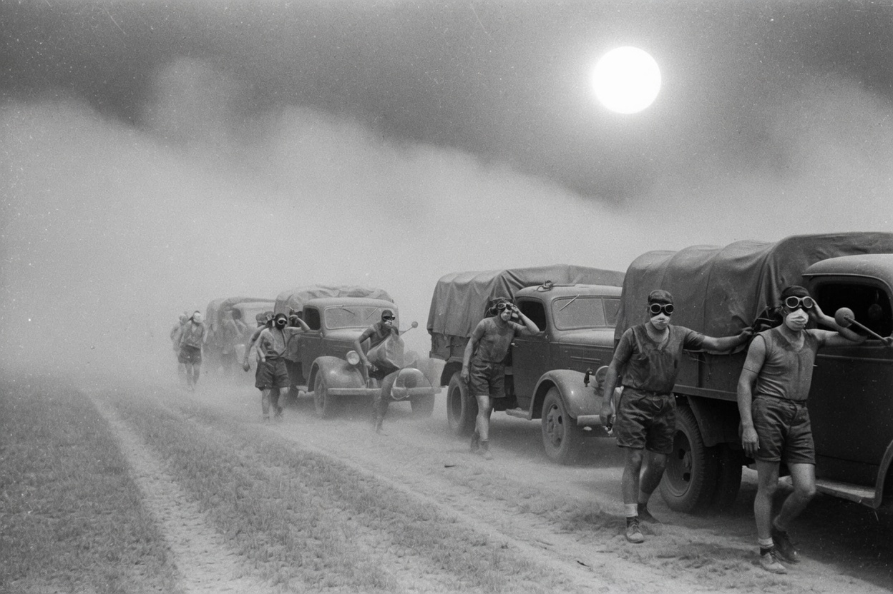

A condensed reading of a German Report Series pamphlet
Former panzer commanders, writing from memory: the Red Army had an ally Hitler did not pack for. Nature. It extracted a price in men, horses, and tanks that leadership could not make good.
This study was prepared by a committee of former German generals and general staff officers, largely from memory, with some help from diaries. The principal author had commanded, in succession, a panzer division, a panzer army, and an army group. The American editors left the prejudices in. The introduction and the conclusions are the German author’s, uninterpreted. That is the point of the German Report Series: you are reading how they thought it had felt.
The German soldier who crossed into Russia, they write, entered a different world, opposed not only by the enemy but by the forces of nature. “Nature is the ally of the Russian Army.” To conquer those elements was the more difficult because their fury was not fully recognised. The German command had been under the impression that the Red Army could be destroyed west of the Dnepr, “and that there would be no need for conducting operations in cold, snow, and mud.”
Chapter 01
A war planned to end in autumn
Winter in most of European Russia south of the Arctic Circle sets in suddenly and lasts five to six months. The clear weather after the autumn mud lasts at most a month — too short for extensive operations. Cold, ice, and snow may hinder as early as December, especially in the north.
Snowfall varies. Along the lower Don and Donets in the winter of 1942–43 the first snow fell in mid-December and did not affect mobility all winter. The same winter put more than eighteen inches on the middle course of those rivers and around Kharkov. Three to four feet is common in the north, where wheeled vehicles move only on cleared roads, and even tanks are restricted to plowed ones. Leningrad may have twenty-eight inches in a severe winter, or less than two in a mild one. Watercourses south of the city often freeze by mid-November. Temperatures there may fall to −40°F; even mild winters drop to −20.
The winter of 1941–42 was the worst. Northwest of Moscow the January mean was −32°F. The 26th of that month, in the same area, saw the lowest recorded temperature of the entire Russian campaign: −63°F. The south had record lows too, −22 to −40, against 14 to −40 the following winter.
Landmarks vanish. Russian villages are hard to identify from a distance. Often a church on high ground is the only sign. If there is no church, woods filled with screeching birds usually mean a village is nearby. The peasant stores his winter supplies in advance “and digs in to spend the winter completely cut off from the outside world.”
Chapter 02
December 1941 — April 1942
At the beginning of December 1941, 6th Panzer Division was nine miles from Moscow and fifteen from the Kremlin when the temperature dropped to −30°F and Siberian troops smashed the drive. Paralyzed by cold, the Germans could not aim rifle fire. Bolt mechanisms jammed or strikers shattered. Machine guns iced. Recoil liquid froze. Mortar shells detonated in deep snow “with a hollow, harmless thud.” Mines were no longer reliable. Only one German tank in ten had survived the autumn mud, and those still available could not move through snow because of their narrow tracks. At first the Russian attack was slowed with hand grenades. After a few days the prepared positions in villages were surrounded or penetrated.
They held northwest of Moscow until 5 December. On the 6th came the first retreat order of the war. Hitler neither expected nor planned for a winter war. Leadership and bravery, the authors write, could not compensate for the lowered firepower of the divisions.

The clothing they had Summer uniforms in a blizzard. A company that spent a thaw day entrenching itself lost 65 of 93 men to a sudden night cold wave. Front-line troops became “mentally numbed.” Medical officers had to make certain soldiers changed socks before swollen feet made the boots impossible to remove.
Only one German tank in ten had survived the autumn muddy season, and those still available could not move through the snow because of their narrow tracks. Effects of Climate on Combat in European Russia, Chapter 1
On Christmas Eve the 4th Armored Infantry Regiment, refitting at Shakhovskaya, was alerted to counterattack a Russian breakthrough on the Lama west of Volokolamsk. On 26 December it moved out in a snowstorm. Inadequately clothed. Warming halt in every village. Two days to cover twelve miles to the line of departure. They closed the gap on the 28th. On the 29th they surrounded the breakthrough force — and then night temperatures fell to −30 and −40, the nearby villages were destroyed, the old positions on the Lama were buried in snow, and to remain exposed “would have meant certain death.” They withdrew to a distant village. The Russians saw the encirclement abandoned, concentrated, and eventually forced a withdrawal of the entire German front in the area. Success had turned to failure because they were not equipped to withstand extreme cold.
Thaw then freeze is worse than steady cold. End of March 1942, Lake Ladoga region: noon 41°F, then a sharp drop at night. Boots, socks, and trousers that had been wet all day stiffened and froze toes and feet. Serious frost injuries when troops overheated from combat had to spend the night in snow pits, especially if they napped.
| Fourth Army, 1942 | Number | Note |
|---|---|---|
| By 5 January | 2,000 | frostbite, plus half as many from enemy action |
| 1 January – 31 March | 96,535 | casualties from all causes |
| Of those, frostbite | 14,236 | about one in seven |
| One company, one night | 65 of 93 | thaw, then freeze |
On 4 December Fourth Army had already failed to penetrate Moscow’s outer defences because the Russians could use the rail net around the city. The weather turned bitter the same day the Russians attacked. A radio intercept said the drive was an all-out effort to knock Germany out of the war. Later counts: 30 infantry divisions, 33 infantry brigades, 6 armoured brigades, 3 cavalry divisions on the Moscow front. The Russians, too, suffered in the open. North of Rzhev that winter they failed to take a village and had to spend the night outside. Cut off and stiff, they were too weak to hinder a German withdrawal that passed within a hundred yards of them, including two batteries.
The first warm, sunny day of spring was 18 April. The Russian attacks ceased.
Chapter 03
Skis, panjes, and the T-34 as a snowplough
A war of movement is difficult in deep snow. Foot marches in twenty inches are slow; deeper, exhausting. When snow was not too deep the Germans used details, in shifts, to tramp trails. Ski troops as trail breakers. The Russians used T-34 tanks to pack snow. “The tracks used on German tanks during the first year of the war were too narrow for this purpose.” Above forty inches, foot and wheeled movement become impossible. A snow crust will sometimes bear small groups, but hard-frozen snow is only for night movement — the approach can be heard at a great distance.
A normal infantry attack cannot be made in deep snow. The book is a catalogue of improvisations: ski troops, whom the Germans did not use in units above battalion in that first winter; panje sleighs, the peasant sledge that outworked the truck; reindeer, north of the Circle, for wounded. Mortars and grenades muffled. Orientation gone. A twelve-day blizzard that turned a fifty-five-mile march, planned for three days, into fifteen.

Russian ski units were more successful in combination than alone. In the Moscow counteroffensive of December 1941 a force of ski troops, cavalry, and tanks together. The Germans did not have the clothing, the training, or the numbers. White camouflage, when it finally arrived, was a revelation they write down as if it were a technical invention.
For individual movement, skis are best. Large ski units can only be supplied if someone has packed a trail first — which is why the T-34 as snowplough is not a colour piece. It is logistics.
Chapter 04
Rasputitsa · four to six weeks, twice a year
The rain and mud of spring and autumn have a decisive effect upon military operations in European Russia. With the first thaws, most of the country below the Arctic Circle becomes a muddy mass. Spring mud lasts four to six weeks and ends when the ground is thawed enough to absorb melted snow. Autumn mud starts in early October and lasts about four weeks, then ends suddenly after the first frosts. In sandy regions or on high ground the effects are less severe. In the black-earth belt of the Ukraine they are particularly severe.
Spring floods swell all streams. Rivers increase to as much as ten times their normal width. Floating ice threatens bridges, often collapsing them. All river traffic is suspended. Then the water goes and leaves “an ocean of mud.” In open country one sinks knee-deep. Paved roads give way. Motor vehicles become hopelessly stuck. Force usually makes it worse: waste of energy, terrific fuel consumption, complete breakdown. Few railroads, and fewer roads, remain passable. Often aircraft offer the only transport.
Autumn 1941 An entire German army completely stopped. Mid-October, more severe than any muddy season in either world war. Courier service on tracked vehicles. Finally only horse-drawn vehicles could move. Pursuit after Bryansk impossible. Roads littered with dead draft animals. Few tanks serviceable.
The Russians are by no means immune. They made it a point not to launch or continue large-scale operations during the muddy season. They halted the winter offensive before Moscow on that first warm, sunny day of spring — 18 April 1942 — “despite the fact that their objective was virtually within their grasp.” When they had to move anyway, “countless Russian tanks would wallow helplessly.” More than once an entire Russian tank corps got barely a dozen machines into combat. But Russian tanks “are designed to take the worst of punishment and usually reached their objective.”
Large-scale operations are impossible. Defense in place is effective: the attacker is at a disadvantage and confined to local actions. A forced withdrawal from an organized position is the worst possible turn — all the former advantages become hindrances, and weapons, vehicles, and supplies are likely to be lost.
Artillery must be light. German pieces were too heavy; teams of horses could not budge them. Corduroy roads, often built by combat troops because there were not enough engineers, were visible from the air. Dummy roads did not help much. Every gun position had to be a strongpoint. Mud dampens splinter effect and causes a high number of duds. Fire adjustment becomes guesswork.
Chapter 05
The summer that looks like a gift
Summer comes suddenly south of the Arctic Circle. Overnight, spring disappears. Ground hardens, roads dry, mud becomes crust or dust. Days warm, nights cool; only in the south is the heat intense. Moors dry. Narrow paths emerge from swamp. Islands rise and furnish partisans with hiding places. All roads are passable. “Summer roads” form themselves by use, without engineers — speeds up to fifty miles an hour, often preferred to the potholed regular roads. Useless after rain; if not used while wet they dry to a smooth surface. Rivers drop and can be forded. Summer is “the most favorable period for operations in European Russia.”
Then a thunderstorm. Near Kiev, August 1941, a storm was almost fatal to a regiment of German motorized infantry. Ordered to block the last escape of Russians encircled north of Cherkassy, they did the job on dry roads. Relieved, ordered to join Second Panzer Group for Bryansk. Hardly had the first elements moved out when rain turned the roads into a slippery mass. The last regiment stuck fast. Russian tanks with wide tracks could still move; the German motorized infantry was anchored by its own wheels. Lacking the firepower to defend against tanks, the infantry set fire to its vehicles and set out on foot.
Dust wrecked motors from the first weeks. Many tanks had no dust filters; on those that did, the filters clogged. Quartz dust was sucked into engines until they were ground out. Abrasive action reduced efficiency and increased fuel consumption; thus weakened, the tanks entered the autumn mud “which dealt them the death blow.” The Volkswagen, otherwise serviceable, stuck easily because of its narrow wheels. Huge dust clouds provoked air attacks.
Water in summer is uniformly poor, and worse toward the south. Between the Don and the Volga, in the battle of Stalingrad, German forces “had practically no local water supply.”

On 11 July 1941, 6th Panzer Division was diverted to help 1st Panzer near Luga. The map showed a road through swamp to Novoselye. Local residents said no such road had existed for forty years. Twelve swampy brooks, each a delay for a rebuilt bridge. Vehicles breaking through crusted ground, towing vehicles sinking beside them. Rate of march: about one mile an hour. First vehicles at the halt at 2000; last truck at 0400. Men and motors out of water. The rest of the division took another route. The flying column never attacked on the 11th. The next morning they met American amphibian tanks for the first time on this front and knocked out six of them at close range — three on land, three in a stream.
Chapter 06
Midnight sun · polar night · no panzers
The Arctic zone of European Russia runs from the coast east of Kirkenes south to the Bay of Kandalaksha, about 190 air miles. It contains the land routes from Murmansk and commands the shipping lanes to the White Sea. Midnight sun in summer, twenty-four-hour night in winter, muddy transitions in between: conventional ideas of freedom of manoeuvre do not apply.
“In the arctic a military decision communicated by an order is irrevocable.” An interminable time elapses between impulse and effect. To stop, reverse, or change direction is to risk the initiative. First decisions must be correct. Leaders down to the squad must make decisions far beyond their usual scope.
The Atlantic Drift raises winter means by at least 35°F against Siberian latitudes. The January mean inland on the Kola Peninsula is still 18°F higher than corresponding Siberia. Winter on the arctic coast ranges from 43° to −31°F. Summer maximums 75 to 85 on the coast, 95 inland. Night frosts are common in the subpolar summer. Only the coast has one whole month above freezing — July.
The ideal time for large-scale ground operations is late winter, about two months from March: days lengthening, lakes and swamps still frozen, ice roads usable. Early winter is also favourable, but an operation then risks running into the polar night. Summer is the season least suited to ground operations. Large areas impassable; the land routes in their worst condition.
Housing is virtually nonexistent. Finnish log huts up to 69°N; timbered dugouts farther north. Snow too loose and powdery for igloos. Ordinary shelter tents inadequate. Finnish plywood tents and Swedish cloth tents with stoves are excellent.
Only mountain and ski troops should be used, organised in ski units or mobile task forces capable of three days without resupply, heavy weapons in one-man loads. Finnish Sissi tactics: small-unit hits, each man briefed on the objective, method left to the group. Motti: small-scale envelopment, almost sneaking around, then annihilation once the ring is closed. Both depend on lakes, concealment, and the self-reliance of officers and men.
Tanks and self-propelled artillery are of limited value. Huge granite boulders make cross-country movement impossible. Armour can move only on the few roads. “No German tank or self-propelled gun ever saw action north of the Arctic Circle in World War II.”
Chapter 07
Clothing, horses, and the next winter
Winter uniform, they decided, is layers, not thickness. Trousers loose enough for two pairs of drawers, tight at the ankle. Blouses large enough for extra underwear and a fur vest. Windproof, snowproof parkas for ski troops. Fur for sentries and drivers; fur is wrong for skiers because it induces sweat — quilted is best. Wool toque plus felt or fur cap with ear flaps. White camouflage coats. White face masks. Chemical warming pads. Regular use of the sauna helped prevent cold illnesses, when a sauna could be found.
Horses collapsed on the mud roads of 1941 and on the ice of 1942. German horses freeze in the open under −4°F; Russian horses, the authors say, will stand −68° if the wind is off them. Most of the 1,500,000 horses Germany lost in Russia died of wounds, work, hunger, and cold — not of a special disease. Panje ponies and panje sleighs did work the German horse and the German truck could not. In the far north, reindeer evacuated wounded.
The railway was the campaign’s artery and it clotted. First winter: 70 percent of German locomotives broke down. Army Group Centre’s daily quota was twenty-eight trains; sometimes a third got through, frequently less. Second Army and Second Panzer together needed eighteen supply trains a day and received two. They could not take Tula in November 1941 because supply had collapsed. Winter clothing donated by the German people did not reach the front until the end of January 1942. A panzer division near Volokolamsk was taking up to 800 frostbite casualties a day.
Germany was then producing 85 tanks and 40 assault guns a month. Second Panzer Group, around Orel, lost 60 percent of its tanks in the autumn mud. In March 1944, 6,000 Germans were cut off in Ternopol; a relief of 35 Tigers and 100 Panthers crossed the Strypa and then stopped at half of twelve miles. The city was lost.
The pamphlet is not a confession. It is a staff study written by men who still believe, in 1952, that the Wehrmacht could have mastered the climate if it had packed for it. Maybe. The facts they set down are more interesting than the moral. They planned to finish west of the Dnepr. They brought summer uniforms. They brought tanks with narrow tracks and no dust filters. They met a country that has two rasputitsas a year, a winter that lasts half the calendar, and an opponent who packed snow with T-34s and moved on skis at night. Nature, they wrote, is the ally of the Russian Army. On the evidence they assembled, they were not wrong.
If you remember six things from the German Report Series, remember these.
One. They thought the war would end west of the Dnepr. They did not pack for cold, snow, or mud. That is not a metaphor. It is the preface.
Two. 6th Panzer Division was nine miles from Moscow when the mercury hit −30°F and the drive died. Only one German tank in ten had survived the autumn mud. The rest could not move in snow because the tracks were too narrow.
Three. Fourth Army, 1 January to 31 March 1942: 96,535 casualties, 14,236 of them frostbite. A company of 93 lost 65 men to a thaw that froze overnight.
Four. The campaign low was −63°F, 26 January 1942, northwest of Moscow. Mortars thudded harmlessly in deep snow. Recoil liquid froze. Strikers shattered.
Five. Mud stops armies twice a year. Autumn 1941 stopped an entire German army for a month. The Russians halted in front of Moscow on the first warm day of spring rather than fight it. T-34s packed snow; German tanks could not.
Six. North of the Arctic Circle, no German tank ever saw action. First decisions are irrevocable. The Finns already knew how to fight there. The Germans were taking notes in a country that had been taking them for centuries.